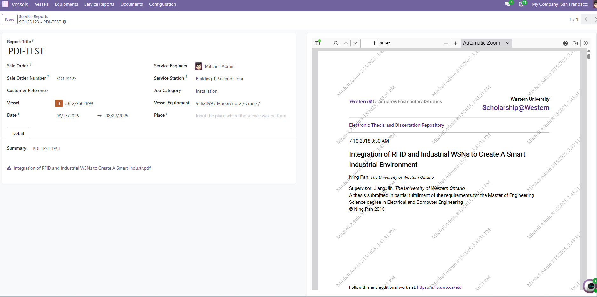
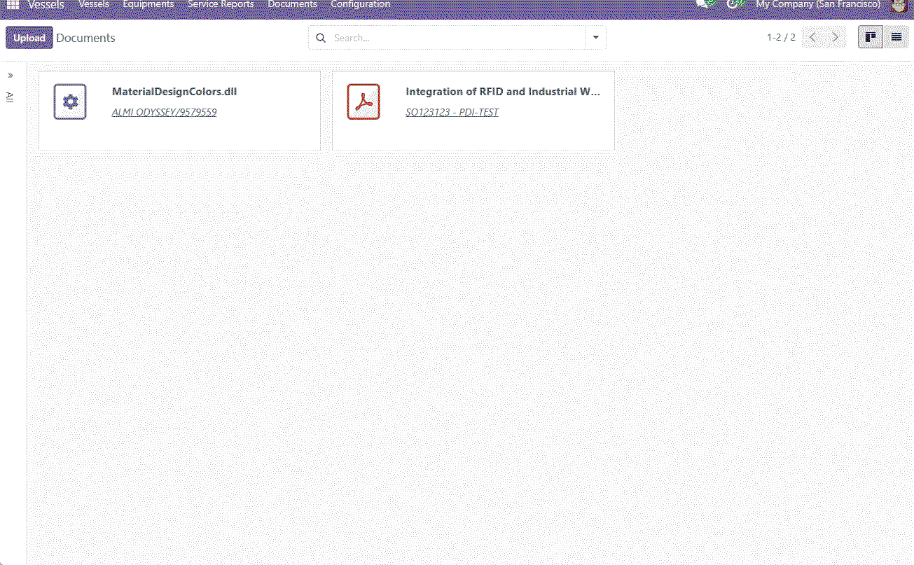

Allowing you preview pdf documents with watermarked text on it.
pdf_viewer_wm, field widget for binary(mimetype:pdf) fieldspdf_viewer.pdf_watermark, field widget for binary(mimetype:pdf) fields.binary.WatermarkedFileViewer, enhanced version of FileViewer componentpdf_viewer_wm:
<!--add class option enable you set the height value of the viewer container
class="h-screen" //full screen
class="half-screen" // half screen
class="h-300" //300px
class="h-500" //500px
-->
<field name="binary_field" widget="pdf_viewer_wm" class="h-screen"/>
Effect Preview: 
pdf_watermark: <field name="binary_field" widget="pdf_watermark"/>
An example of using the component WatermarkedFileViewer:
import { KanbanRecord } from "@web/views/kanban/kanban_record";
import { useFileViewer } from "@web/core/file_viewer/file_viewer_hook";
import { WatermarkedFileViewer } from "@pdf_viewer_watermarked/components/watermarked_file_viewer/watermarked_file_viewer";
export class XxDocumentKanbanRecord extends KanbanRecord {
setup() {
super.setup();
this.fileViewer = useFileViewer();
}
}
let id = 1; // 为每个viewer生成唯一ID
patch(VesselDocumentKanbanRecord.prototype, {
setup() {
super.setup();
const originalOpen = this.fileViewer.open;
this.fileViewer.open = (file, files = [file]) => {
if (file.isPdf) {
// so far this component only render pdf file
this.openWithWatermark(file, files);
} else {
originalOpen(file, files);
}
};
},
openWithWatermark(file, files) {
if (!file.isViewable) {
return;
}
const viewableFiles = files.filter((file) => file.isViewable);
const index = viewableFiles.indexOf(file);
const fileViewerId = `web.file_viewer${id++}`;
registry.category("main_components").add(fileViewerId, {
Component: WatermarkedFileViewer,
props: {
files: viewableFiles,
startIndex: index,
close: () => {
registry.category("main_components").remove(fileViewerId);
}
},
});
}
});
Effect Preview: 
Bugs are tracked on GitHub Issues. In case of trouble, please check there if your issue has already been reported. If you spotted it first, help us to smash it by providing a detailed and welcomed feedback.
The copyright of this module belongs to Alexandre Ma